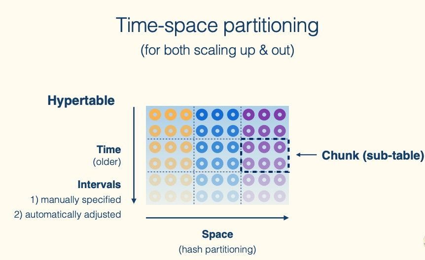
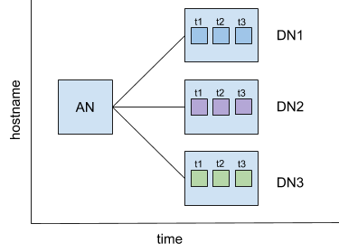

class: center, middle
# .red[TimescaleDB]
.left.footnote[by [Harry](http://tclh123.com)]
---
class: center, middle
An open-source time-series SQL database optimized
for fast ingest and complex queries, with automatic
partitioning and efficient data retention.
Packaged as a PostgreSQL extension.
---
# Content
- How to use it?
- Key features
- Use cases in Hanson
---
# How to use it?
PostgreSQL + TimescaleDB extension
```
postgres=# \dx
List of installed extensions
Name | Version | Schema | Description
-------------+---------+------------+-------------------------------------------------------------------
plpgsql | 1.0 | pg_catalog | PL/pgSQL procedural language
timescaledb | 1.6.0 | public | Enables scalable inserts and complex queries for time-series data
(2 rows)
```
---
# How to use it?
Use the official docker image (`timescale/timescaledb:1.6.0-pg11`)
## Configuration
- `postgresql.conf`
- Some TimescaleDB specific configs `timescaledb.*`
---
## Creating Hypertables
First, create a regular sql table
```
CREATE TABLE conditions (
time TIMESTAMPTZ NOT NULL,
location TEXT NOT NULL,
temperature DOUBLE PRECISION NULL,
);
```
Next, transform it into a hypertable with `create_hypertable`
```
# this must be run on a table while it is empty
# or use `migrate_data` option with some limits
SELECT create_hypertable('conditions', 'time');
```
---
## Bulk insert data
```
psql -d new_db -c "\COPY conditions FROM old_db.csv CSV"
```
There's an open sourced Go program (`timescaledb-parallel-copy`) that can speed up large data migrations
by running multiple COPYs concurrently
```
timescaledb-parallel-copy --db-name new_db --table conditions \
--file old_db.csv --workers 4 --copy-options "CSV"
```
---
# Key features
- The Hypertable Abstraction
- Time-space partitioning
- Multi-node: Distributed hypertables (since `2.0`)
- Compression
- Automation
---
## The Hypertable Abstraction
### Hypertable
Abstraction layer and primary point of interaction with
your data used for creating tables and indexes,
altering tables, inserting data, selecting data
---
## The Hypertable Abstraction
### Hypertable
```
postgres=# select * From timescaledb_information.hypertable;
table_schema | table_name | table_owner | num_dimensions | num_chunks | table_size | index_size | toast_size | total_size
-----------------------+---------------------------------+-------------+----------------+------------+------------+------------+------------+------------
public | live_data_football | postgres | 1 | 36 | 941 MB | 251 MB | | 1192 MB
public | winner_snipe_log | postgres | 1 | 51 | 40 MB | 7320 kB | | 47 MB
...
```
---
## The Hypertable Abstraction
### Chunks
Hypertable are automatically split into chunks; each
chunk corresponds to a specific time interval and a
region of the partition key's space
---
## The Hypertable Abstraction
### Chunks
```
postgres=# SELECT show_chunks('gateway_prices');
show_chunks
-------------------------------------------
_timescaledb_internal._hyper_2_2_chunk
_timescaledb_internal._hyper_2_3_chunk
_timescaledb_internal._hyper_2_6_chunk
_timescaledb_internal._hyper_2_8_chunk
_timescaledb_internal._hyper_2_9_chunk
_timescaledb_internal._hyper_2_11_chunk
...
```
`timescaledb_information.chunks` was added in 2.0
---
## The Hypertable Abstraction

---
### Q: How large should I configure my intervals for time partitioning?
- single chunks from all active hypertables fit into 25% of main memory
- the interval used for new chunks can be changed by calling `set_chunk_time_interval`
- too many chunks can increase planning latency for some types of queries.
---
## The Hypertable Abstraction
### Space partitioning
The main purpose of space partitioning is to
- enable parallelization across multiple data nodes (in the case of distributed hypertables)
- across multiple disks within the same time interval (in the case of single-node deployments).
---
## The Hypertable Abstraction
### additional partitioning dimension
- an experimental feature, `add_dimension()`
- either use interval partitioning (e.g., for a second time partition) or space/hash partitioning
```
SELECT create_hypertable('conditions', 'time');
SELECT add_dimension('conditions', 'time_received', chunk_time_interval => INTERVAL '1 day');
SELECT add_dimension('conditions', 'location', number_partitions => 4);
```
---
## Distributed hypertables (2.0)
Once multi-node TimescaleDB is set up,
we can create a distributed hypertable:
```
-- Create a distributed hypertable partitioned on time and location
SELECT create_distributed_hypertable('conditions', 'time', 'location');
```
The distributed hypertable will then spread data
across the data nodes by the `location` column
and then the data will be further partitioned by time on each data node
---
## Distributed hypertables (2.0)

---
## Compression
first configure the hypertable for compression and then set up a policy for when to compress chunks.
```
ALTER TABLE gateway_prices SET (
timescaledb.compress,
timescaledb.compress_segmentby = 'source,contract_id'
);
-- NOTE: Allow for a full week to deal with any issues with data pipeline,
-- as compressing would mean there is no more insertion allowed, i.e. out
-- of order data can't be just inserted without manual decompression.
SELECT add_compress_chunks_policy('gateway_prices', INTERVAL '5 days');
```
- `add_compress_chunks_policy` was renamed `add_compression_policy` in the new version
---
## Compression
- Query manner: shallow (in time) and wide (in columns) => deep and narrow
- columnar format
- disallows modifications
---
## Compression
Options: `compress_segmentby`, `compress_orderby`
Chunk > segment > compressed columnar
- Each segment of data should contain at least 100 rows in each chunk.
- B-tree indexes are built over each `segmentby` column.
- Indexes on the hypertable are ignored
---
## Compression
```
postgres=# select * From timescaledb_information.compressed_chunk_stats;
hypertable_name | chunk_name | compression_status | uncompressed_heap_bytes | uncompressed_index_bytes | uncompressed_toast_bytes |
uncompressed_total_bytes | compressed_heap_bytes | compressed_index_bytes | compressed_toast_bytes | compressed_total_bytes
---------------------------------+--------------------------------------------+--------------------+-------------------------+--------------------------+--------------------------+--------------------------+-----------------------+------------------------+------------------------+------------------------
gateway_prices | _timescaledb_internal._hyper_2_2_chunk | Compressed | 53 MB | 21 MB | 0 bytes |
74 MB | 13 MB | 832 kB | 5816 kB | 19 MB
gateway_prices | _timescaledb_internal._hyper_2_3_chunk | Compressed | 162 MB | 65 MB | 0 bytes |
227 MB | 56 MB | 3360 kB | 11 MB | 70 MB
gateway_prices | _timescaledb_internal._hyper_2_6_chunk | Compressed | 156 MB | 62 MB | 0 bytes |
218 MB | 51 MB | 3088 kB | 11 MB | 65 MB
...
gateway_prices | _timescaledb_internal._hyper_2_1720_chunk | Uncompressed | | | |
```
---
## Automation
`add_job(proc, schedule_interval, ..)`
```
CREATE OR REPLACE PROCEDURE user_defined(job_id int, config jsonb) LANGUAGE PLPGSQL AS
$$
BEGIN
RAISE NOTICE 'Executing action % with config %', job_id, config;
END
$$;
-- Register the procedure to be run every hour.
SELECT add_job('user_defined','1h');
```
---
## Automation
`add_retention_policy(relation, drop_after, ..)`
```
-- Create a data retention policy to discard chunks greater than 6 months old:
SELECT add_retention_policy('conditions', INTERVAL '6 months');
```
---
## Automation
Shows information and statistics
about jobs run by the automation framework.
```
postgres=# SELECT * FROM timescaledb_information.policy_stats;
hypertable | job_id | job_type | last_run_success | last_finish | last_successful_finish | last_start | next_start | total_runs | total_failures
------------------+--------+-----------------+------------------+-------------------------------+-------------------------------+-------------------------------+-------------------------------+------------+----------------
cancelled_orders | 1002 | compress_chunks | t | 2020-10-18 07:58:15.241811+00 | 2020-10-18 07:58:15.241811+00 | 2020-10-18 07:58:15.229326+00 | 2020-10-21 19:58:15.241811+00 | 39 | 0
gateway_prices | 1000 | compress_chunks | t | 2020-10-17 09:14:04.980877+00 | 2020-10-17 09:14:04.980877+00 | 2020-10-16 16:43:27.350996+00 | 2020-10-20 21:14:04.980877+00 | 46 | 0
new_orders | 1001 | compress_chunks | t | 2020-10-18 08:05:31.114395+00 | 2020-10-18 08:05:31.114395+00 | 2020-10-18 08:05:31.104514+00 | 2020-10-21 20:05:31.114395+00 | 39 | 0
(3 rows)
```
---
class: center middle
# Use cases in Hanson
---
```
postgres=# select * from hypertable_approximate_row_count() order by row_estimate desc;
schema_name | table_name | row_estimate
-----------------------+---------------------------------+--------------
public | gateway_prices | 1441398144
public | new_orders | 159182176
public | book_resets | 145741120
public | bookie_maker_remote_markets_log | 133834824
_timescaledb_internal | _compressed_hypertable_13 | 120147632
public | smarkets_maker_log | 88921296
public | trades | 54293584
public | cancelled_orders | 48575536
_timescaledb_internal | _compressed_hypertable_14 | 18878592
public | live_data_football | 15745554
public | bookie_maker_log | 12891043
_timescaledb_internal | _compressed_hypertable_23 | 9127832
_timescaledb_internal | _compressed_hypertable_15 | 8332091
_timescaledb_internal | _compressed_hypertable_25 | 7619724
_timescaledb_internal | _compressed_hypertable_24 | 6463697
public | reaper_log | 3786200
public | starting_prices | 2794271
public | quote_quality | 2101027
public | betfair_order_settlements | 313880
public | winner_snipe_log | 243901
public | betfair_settlements | 52777
public | betdaq_market_settlements | 1983
public | strategy_parameter | 26
(23 rows)
```
---
## Query smarkets_maker_log by uuid
```
select * from smarkets_maker_log where uuid = '1036050078812673962';
```
---
## Query smarkets_maker_log by uuid
```
select * from smarkets_maker_log where uuid = '1036050078812673962';
```
This could take forever to run..

---
Let's check the table schema
```
Table "public.smarkets_maker_log"
Column | Type | Collation | Nullable | Default | Storage | Stats target | Description
---------------+-----------------------------+-----------+----------+---------+----------+--------------+-------------
timestamp | timestamp without time zone | | not null | | plain | |
uuid | character varying(20) | | not null | | extended | |
contract_id | integer | | not null | | plain | |
remote_source | source | | not null | | plain | |
Indexes:
"unique_timestamp_uuid_idx" UNIQUE CONSTRAINT, btree ("timestamp", uuid)
"smarkets_maker_log_timestamp_idx" btree ("timestamp" DESC)
"smarkets_maker_log_uuid_idx" btree (uuid)
Triggers:
ts_insert_blocker BEFORE INSERT ON smarkets_maker_log FOR EACH ROW EXECUTE PROCEDURE _timescaledb_internal.insert_blocker()
Child tables: _timescaledb_internal._hyper_18_1006_chunk,
_timescaledb_internal._hyper_18_1018_chunk,
_timescaledb_internal._hyper_18_1020_chunk,
_timescaledb_internal._hyper_18_1022_chunk,
_timescaledb_internal._hyper_18_1024_chunk,
_timescaledb_internal._hyper_18_1026_chunk,
...
```
=> ` "smarkets_maker_log_uuid_idx" btree (uuid) `
---
Use `explain` to check the plan
```
postgres=# explain select remote_source from smarkets_maker_log
where uuid = '1036050078812673962';
QUERY PLAN
-----------------------------------------------------------------------------------------------------------------------------------
Append (cost=0.07..46594327.35 rows=9127265006 width=4)
-> Custom Scan (DecompressChunk) on _hyper_18_602_chunk (cost=0.07..2.36 rows=36000 width=4)
Filter: ((uuid)::text = '1036050078812673962'::text)
-> Seq Scan on compress_hyper_23_855_chunk (cost=0.00..2.36 rows=36 width=64)
-> Custom Scan (DecompressChunk) on _hyper_18_642_chunk (cost=0.23..164.06 rows=706000 width=4)
Filter: ((uuid)::text = '1036050078812673962'::text)
-> Seq Scan on compress_hyper_23_859_chunk (cost=0.00..164.06 rows=706 width=36)
-> Custom Scan (DecompressChunk) on _hyper_18_665_chunk (cost=0.07..2369.98 rows=35298000 width=4)
Filter: ((uuid)::text = '1036050078812673962'::text)
-> Seq Scan on compress_hyper_23_865_chunk (cost=0.00..2369.98 rows=35298 width=36)
...
-> Index Scan using _hyper_18_1713_chunk_smarkets_maker_log_uuid_idx on _hyper_18_1713_chunk (cost=0.56..2.78 rows=1 width=4)
Index Cond: ((uuid)::text = '1036050078812673962'::text)
-> Index Scan using _hyper_18_1722_chunk_smarkets_maker_log_uuid_idx on _hyper_18_1722_chunk (cost=0.56..2.78 rows=1 width=4)
Index Cond: ((uuid)::text = '1036050078812673962'::text)
(646 rows)
```
---
What if we add time constraint
```
postgres=# explain select * from smarkets_maker_log
where timestamp > now () - INTERVAL '6 day'
and uuid = '1036050078812673962';
QUERY PLAN
------------------------------------------------------------------------------------------------------------------------------------
Custom Scan (ChunkAppend) on smarkets_maker_log (cost=0.07..958002.36 rows=9127265006 width=36)
Chunks excluded during startup: 210
-> Custom Scan (DecompressChunk) on _hyper_18_1702_chunk (cost=0.07..8035.11 rows=113511000 width=36)
Filter: (((uuid)::text = '1036050078812673962'::text) AND ("timestamp" > (now() - '6 days'::interval)))
-> Seq Scan on compress_hyper_23_1731_chunk (cost=0.00..8035.11 rows=113511 width=159)
-> Index Scan using _hyper_18_1704_chunk_smarkets_maker_log_uuid_idx on _hyper_18_1704_chunk (cost=0.56..2.79 rows=1 width=36)
Index Cond: ((uuid)::text = '1036050078812673962'::text)
Filter: ("timestamp" > (now() - '6 days'::interval))
-> Index Scan using _hyper_18_1707_chunk_smarkets_maker_log_uuid_idx on _hyper_18_1707_chunk (cost=0.56..2.79 rows=1 width=36)
Index Cond: ((uuid)::text = '1036050078812673962'::text)
Filter: ("timestamp" > (now() - '6 days'::interval))
...
-> Index Scan using _hyper_18_1713_chunk_smarkets_maker_log_uuid_idx on _hyper_18_1713_chunk (cost=0.56..2.79 rows=1 width=36)
Index Cond: ((uuid)::text = '1036050078812673962'::text)
Filter: ("timestamp" > (now() - '6 days'::interval))
-> Index Scan using _hyper_18_1722_chunk_smarkets_maker_log_uuid_idx on _hyper_18_1722_chunk (cost=0.56..2.79 rows=1 width=36)
Index Cond: ((uuid)::text = '1036050078812673962'::text)
Filter: ("timestamp" > (now() - '6 days'::interval))
(23 rows)
```
---
```
postgres=# select * from smarkets_maker_log where timestamp > now () - INTERVAL '5 day' and uuid = '1036050078812673962';
timestamp | uuid | contract_id | remote_source
-----------+------+-------------+---------------
(0 rows)
Time: 254.962 ms
postgres=# select * from smarkets_maker_log where timestamp > now () - INTERVAL '6 day' and uuid = '1036050078812673962';
timestamp | uuid | contract_id | remote_source
-----------+------+-------------+---------------
(0 rows)
Time: 1880.243 ms (00:01.880)
postgres=# select * from smarkets_maker_log where timestamp > now () - INTERVAL '7 day' and uuid = '1036050078812673962';
timestamp | uuid | contract_id | remote_source
-----------+------+-------------+---------------
(0 rows)
Time: 3095.920 ms (00:03.096)
postgres=# select * from smarkets_maker_log where timestamp > now () - INTERVAL '8 day' and uuid = '1036050078812673962';
timestamp | uuid | contract_id | remote_source
-----------+------+-------------+---------------
(0 rows)
Time: 4239.173 ms (00:04.239)
```
---
Filter by `uuid` and `contract_id`
```
postgres=# select * from smarkets_maker_log
where uuid = '1036050078812673962'
and contract_id=38953067;
timestamp | uuid | contract_id | remote_source
----------------------------+---------------------+-------------+---------------
2020-10-21 06:14:29.264123 | 1036050078812673962 | 38953067 | betfair_x
(1 row)
Time: 263.528 ms
```
---
Filter by `uuid` and `contract_id`
```
postgres=# explain select * from smarkets_maker_log
where uuid = '1036050078812673962'
and contract_id=38953067;
QUERY PLAN
------------------------------------------------------------------------------------------------------------------------------------------------------------------
Append (cost=2.36..1611.95 rows=213006 width=36)
-> Custom Scan (DecompressChunk) on _hyper_18_602_chunk (cost=2.36..2.36 rows=1000 width=74)
Filter: ((uuid)::text = '1036050078812673962'::text)
-> Index Scan using compress_hyper_23_855_chunk__compressed_hypertable_23_contract_ on compress_hyper_23_855_chunk (cost=0.14..2.36 rows=1 width=288)
Index Cond: (contract_id = 38953067)
-> Custom Scan (DecompressChunk) on _hyper_18_642_chunk (cost=2.49..2.49 rows=1000 width=36)
Filter: ((uuid)::text = '1036050078812673962'::text)
-> Index Scan using compress_hyper_23_859_chunk__compressed_hypertable_23_contract_ on compress_hyper_23_859_chunk (cost=0.28..2.49 rows=1 width=160)
Index Cond: (contract_id = 38953067)
-> Custom Scan (DecompressChunk) on _hyper_18_665_chunk (cost=2.51..2.51 rows=1000 width=36)
Filter: ((uuid)::text = '1036050078812673962'::text)
-> Index Scan using compress_hyper_23_865_chunk__compressed_hypertable_23_contract_ on compress_hyper_23_865_chunk (cost=0.29..2.51 rows=1 width=159)
Index Cond: (contract_id = 38953067)
...
-> Index Scan using _hyper_18_1713_chunk_smarkets_maker_log_uuid_idx on _hyper_18_1713_chunk (cost=0.56..2.78 rows=1 width=36)
Index Cond: ((uuid)::text = '1036050078812673962'::text)
Filter: (contract_id = 38953067)
-> Index Scan using _hyper_18_1722_chunk_smarkets_maker_log_uuid_idx on _hyper_18_1722_chunk (cost=0.56..2.78 rows=1 width=36)
Index Cond: ((uuid)::text = '1036050078812673962'::text)
Filter: (contract_id = 38953067)
(863 rows)
```
---
Check the `compress_segmentby` of smarkets_maker_log
```
ALTER TABLE smarkets_maker_log SET (
timescaledb.compress,
timescaledb.compress_segmentby = 'contract_id',
timescaledb.compress_orderby = 'uuid, timestamp DESC'
);
```
Question: Can we put `uuid` into `compress_segmentby`?
---
Check the `compress_segmentby` of smarkets_maker_log
```
ALTER TABLE smarkets_maker_log SET (
timescaledb.compress,
timescaledb.compress_segmentby = 'contract_id',
timescaledb.compress_orderby = 'uuid, timestamp DESC'
);
```
Question: Can we put `uuid` into `compress_segmentby`?
Ans: No.
- Feature: secondary indexes on compressed chunks [#2418](https://github.com/timescale/timescaledb/issues/2418)
---
# QA
## References
- Gitlab: https://github.com/timescale/timescaledb
- API reference: https://docs.timescale.com/latest/api (exhaustive)
- https://www.percona.com/live/18/sites/default/files/slides/TimescaleDB-Percona-2018-main.pdf
---
name: last-page
class: center middle
## Thank you!